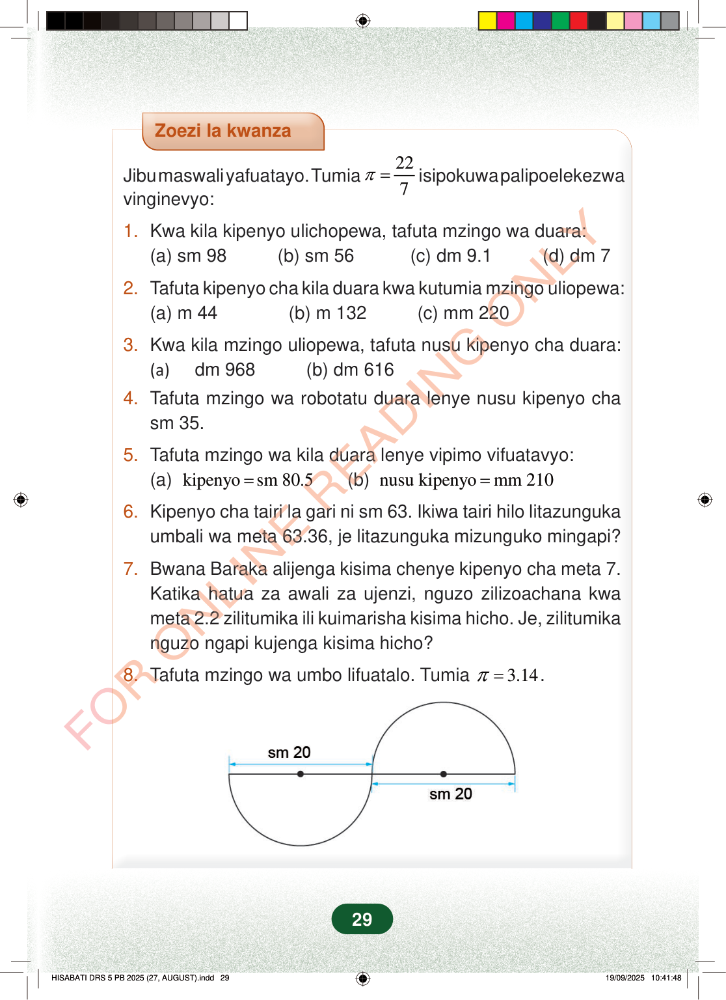

Zoezi la kwanzaJibu maswali yafuatayo. Tumia227π=isipokuwa palipoelekezwavinginevyo:1.Kwa kila kipenyo ulichopewa, tafuta mzingo wa duara:(a) sm 98 (b) sm 56 (c) dm 9.1 (d) dm 72.Tafuta kipenyo cha kila duara kwa kutumia mzingo uliopewa:(a) m 44 (b) m 132 (c) mm 2203.Kwa kila mzingo uliopewa, tafuta nusu kipenyo cha duara:(a)dm 968 (b) dm 6164.Tafuta mzingo wa robotatu duara lenye nusu kipenyo chasm 35.5.Tafuta mzingo wa kila duara lenye vipimo vifuatavyo:(a)kipenyosm 80.5=(b)nusu kipenyomm 210=6.Kipenyo cha tairi la gari ni sm 63. Ikiwa tairi hilo litazungukaumbali wa meta 63.36, je litazunguka mizunguko mingapi?7.Bwana Baraka alijenga kisima chenye kipenyo cha meta 7.Katika hatua za awali za ujenzi, nguzo zilizoachana kwameta 2.2 zilitumika ili kuimarisha kisima hicho. Je, zilitumikanguzo ngapi kujenga kisima hicho?8.Tafuta mzingo wa umbo lifuatalo. Tumia3.14π=.29
Zoezi la kwanza
Jibu maswali yafuatayo. Tumia 22 7 π = isipokuwa palipoelekezwa vinginevyo:
1. Kwa kila kipenyo ulichopewa, tafuta mzingo wa duara: (a) sm 98 (b) sm 56 (c) dm 9.1 (d) dm 7
2. Tafuta kipenyo cha kila duara kwa kutumia mzingo uliopewa: (a) m 44 (b) m 132 (c) mm 220
3. Kwa kila mzingo uliopewa, tafuta nusu kipenyo cha duara: (a) dm 968 (b) dm 616
4. Tafuta mzingo wa robotatu duara lenye nusu kipenyo cha sm 35.
5. Tafuta mzingo wa kila duara lenye vipimo vifuatavyo: (a) kipenyo sm 80.5 = (b) nusu kipenyo mm 210 =
6. Kipenyo cha tairi la gari ni sm 63. Ikiwa tairi hilo litazunguka umbali wa meta 63.36, je litazunguka mizunguko mingapi?
7. Bwana Baraka alijenga kisima chenye kipenyo cha meta 7. Katika hatua za awali za ujenzi, nguzo zilizoachana kwa meta 2.2 zilitumika ili kuimarisha kisima hicho. Je, zilitumika nguzo ngapi kujenga kisima hicho?
8. Tafuta mzingo wa umbo lifuatalo. Tumia 3.14 π = .
29
Zoezi la kwanzaJibu maswali yafuatayo.Tumia <math><mrow><mi>π</mi><mo>=</mo><mfrac><mn>22</mn><mn>7</mn></mfrac></mrow></math> isipokuwa palipoelekezwa vinginevyo:1.Kwa kila kipenyo ulichopewa, tafuta mzingo wa duara:(a)sm 98(b)sm 56(c)dm 9.1(d)dm 72.Tafuta kipenyo cha kila duara kwa kutumia mzingo uliopewa:(a)m 44(b)m 132(c)mm 2203.Kwa kila mzingo uliopewa, tafuta nusu kipenyo cha duara:(a)dm 968(b)dm 6164.Tafuta mzingo wa robotatu duara lenye nusu kipenyo cha sm 35.5.Tafuta mzingo wa kila duara lenye vipimo vifuatavyo:(a)kipenyo = sm 80.5(b)nusu kipenyo = mm 2106.Kipenyo cha tairi la gari ni sm 63.Ikiwa tairi hilo litazunguka umbali wa meta 63.36, je litazunguka mizunguko mingapi?7.Bwana Baraka alijenga kisima chenye kipenyo cha meta 7.Katika hatua za awali za ujenzi, nguzo zilizoachana kwa meta 2.2 zilitumika ili kuimarisha kisima hicho.Je, zilitumika nguzo ngapi kujenga kisima hicho?8.Tafuta mzingo wa umbo lifuatalo.Tumia <math><mrow><mi>π</mi><mo>=</mo><mn>3.14</mn></mrow></math>.Nusu duara mbili zimeunganishwa kwenye mstari mmoja. Kila nusu duara ina kipenyo cha sm 20.